Tournoi International Handibasket René Pruvot
La 4éme édition du Tournoi International Handibasket René Pruvot aura lieu le samedi 18 et dimanche 19 mai 2024 au Complexe sportif Vauban de Valenciennes.
Ce tournoi handisportif 2024 doit être un moment unique de plaisir, de convivialité et d'échanges permettant de tisser des relations d'amitié entre citoyens européens et de valoriser chacun des participents.
Il s'inscrit dans un contexte Olympique inédit en France.
Nous souhaitons que tous, équipes, joueurs, encadrants, spectateurs, respectent les valeurs olympiques qui sont l'excellence, le respect et l'amitié ainsi que la philosophie du mouvement olympique.
Le mouvement olympique a pour but de contribuer à batir un monde pacifique et meilleur en éduquant la jeunesse par le moyen du sport pratiqué sans discrimination d'aucune sorte et dans l'esprit olympique qui exige la compréhension mutuelle, l'esprit d'amitié, la solidarité et le fair-play.
Equipes
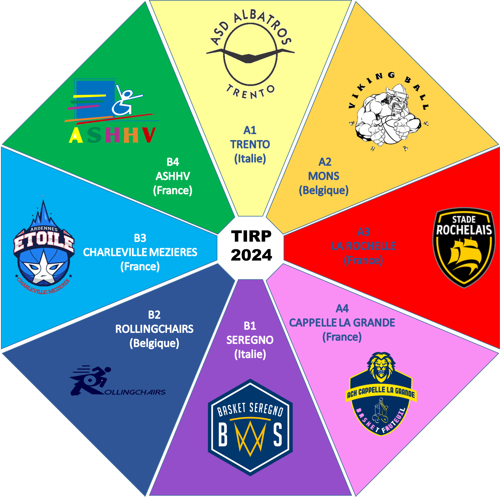
EQUIPE HANDIBASKET DE l’ASHHV - Valenciennes
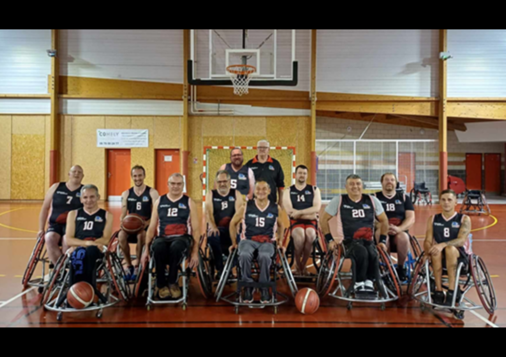
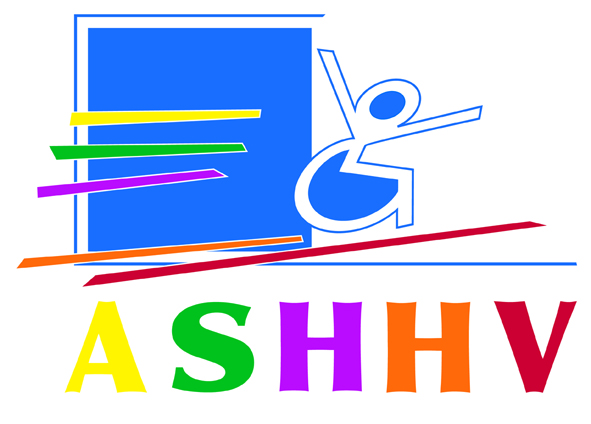
L’association ASHHV a été créée en octobre 1974 à l’initiative, la volonté et l’engagement de Messieurs Jean-Paul MIROUX et René PRUVOT et grâce au soutien du Rotary Club de Valenciennes. L’ASHHV fut la première association Handisport créée en France.
L’objectif était la conquête de l’autonomie, la sortie de l’isolement, le développement de la vie culturelle et sociale de la personne en situation de Handicap par la pratique sportive.
L’ASHHV est la seule association Handisport du Hainaut Cambrésis. Elle comporte actuellement 82 adhérents qui évoluent dans les sections sportives suivantes : Natation, Tir, Athlétisme, Joëlette, Handibasket et Handivolley.
L’équipe de handibasket de l’ASHHV évolue en Nationale 3 (N3) dans le championnat français.
Membres de l’équipe pour la saison 2023-2024 : (années d’ancienneté)
Cédrick PARSY – Président (18 ans) ; Alvyn MARCANT (7 ans) ; Thibault FROMONT (20 ans) ; Amar HAMDAT (26 ans) ; Didier LECONTE (40 ans) ; Laurent GALAN (10 ans) ; Simon FAVRY (5 ans) ; Cengiz TASKIN (4 ans)
Patrick Guyot (joueur loisir)
Entraineur : Jean-Michel PITTAVINO (9 ans)
Entraineur adjoint : Gaelle BUR (5 ans)
Responsable section Basket : Dominique PITTAVINO (9 ans)
Projet de l’équipe : L'équipe de Handibasket espère finir sa saison 2023-2024 dans les 5 premières places de sa poule. Pour la saison prochaine, l’objectif est de continuer à s'étoffer, s'ouvrir à de nouveaux joueurs loisirs et faire connaître un maximum le sport pour personnes en situation de handicap grâce notamment à la page facebook de l'association. Nous espérons aussi continuer à recevoir des établissements scolaires comme ce fut le cas à plusieurs reprises cette année.
EQUIPE HANDIBASKET DE BHBB – Mons (Belgique)
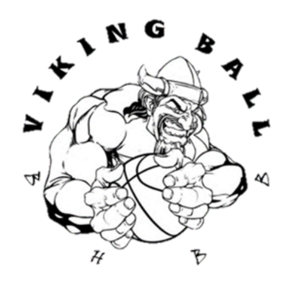
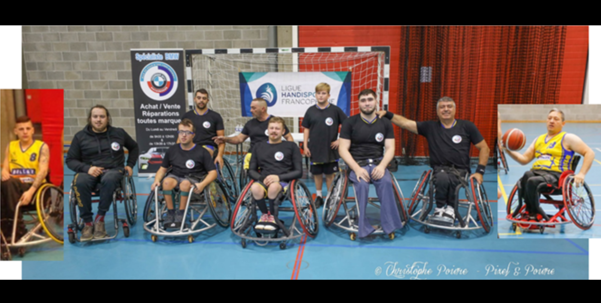
Le club de basket-ball en fauteuil roulant BHBB (Borinage Handi Basket Ball) a été fondé le 1er novembre 2001. Cette association a pour but de promouvoir le sport de loisirs et de compétition pour les personnes à mobilité réduite. Depuis sa création, le club de BHHB est installé à la salle MAX AUDAIN de Frameries.
BHBB est acteur dans de nombreuses manifestations tels que « HANDICAP FESTIVAL » en 2005, dans l’organisation de plusieurs tournois de niveau international à la Sapinette de Mons de 2006 à 2010.
BHHB a participé au championnat national division 1 en 2008, ainsi qu’au championnat régional en 2009, 2014, 2016 2017 et 2018. Organisation du Tournoi pour nos 20 ans du Club en 2022.
L’association BHBB compte environ une vingtaine de membres dirigeants et pratiquants confondus.
Membres de l’équipe pour la saison 2023-2024 : (années d’ancienneté)
Christian n°8 (6 ans) ; Cyrille n°9 (4 ans) ; Tom (joueur loisir) ; Thomas n°14 (5 ans) ; Islam n°15 (4 ans) ; Cengiz n°11 (15ans) ; Kevin n°13 (8 ans)
Yassine n°23 (8 ans), Sébastien n°10 Capitaine (20 ans), Thimao (joueur loisir)
Projet de l’équipe : Le club BHHB ne joue pas en championnat. Il « prête» cependant bon nombres de joueurs qui évoluent dans des championnats NAT1 , NAT2 ou NAT 3 en France et en Belgique. Cela permet d’améliorer sans cesse leur jeu et de vivre de belles expériences. Nos joueurs évoluent à : Valenciennes, Cambrai, Aulnoye-Aymeries, Bruges, Ninane, Gravelines, … .
Nous sommes fiers de compter parmi nos membres des joueurs qui ont été sélectionnés dans l’équipe nationale de Belgique !
EQUIPE HANDIBASKET DES ROLLINGCHAIRS – Liege (Belgique)
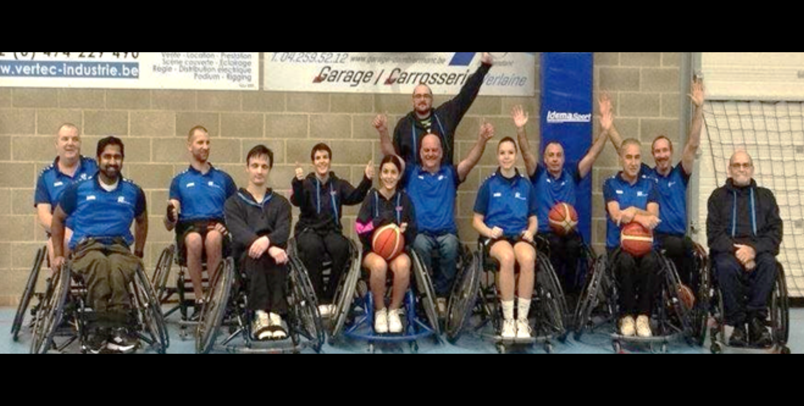
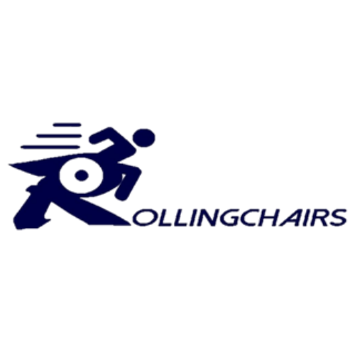
L'ASBL les Rollingchairs a été créé en 2015 avec comme objectif la promotion de l’handisport mais surtout l'acquisition de matériel pour la pratique sportive en handibasket. Grâce au succès de notre travail, nous avons élargi notre offre et notre matériel à d’autres disciplines handisportives.
Nous avons fait l'acquisition de 17 chaises adultes, 5 chaises enfants pour le basket, de 8 chaises adultes et 3 enfants pour le tennis, de 7 chaises de handball adultes, de 2 chaises d'athlétisme wheeler, d’1 voilier, d’1 aviron adapté et de quoi équiper un autre, de 3 kayaks, de 2 paddle sur l'eau, de 3 hippocampes marathon pour des institutions qui ont besoin de matériel, de 3 machines pour le ski alpin dont 1 snowkart avec toutes les coques disponibles dans toutes les tailles, d’1 machine pour le ski nautique. Nous avons également depuis cette année un kart adapté, un exoquad, un autre voilier ainsi qu’une toute nouvelle remorque plus grande et plus pratique.
L’ensemble du matériel nous appartient et nous en sommes très fier.
Nous avons ouvert depuis septembre une section para badminton et sommes le premier club Wallon affilié à la ligue LFBB dans ce sport. Nous organiserons en juin notre premier tournoi et l’année prochaine le Championnat de Belgique.
Notre ASBL est maintenant porteuse du label 1 étoile compétition.
En ce qui concerne le handibasket, nous sommes des amateurs et ne participons pas à un championnat. Nous sommes là pour prendre du plaisir et titiller quand nous le pouvons certaines équipes.
Nous sommes 19 joueurs dont 14 réguliers. Nous avons des jeunes de 11,13 et 14 ans et notre papy de 65 ans. Nous avons deux joueurs qui évoluent à un niveau plus élevé Michel et Sébastien. Pour les autres c'est du pur loisir avec l'envie de gagner mais sans aucune prétention
Notre CA se compose de Benoit TRINON (trésorier), de Sophie LELIEVRE (secrétaire), d’André BALSACQ (président) et qui travaille pour les subsides et l’animation. Depuis peu, Salvatore CACCIATORE, coach du badminton et Mireille NULENS, coach du basket ont rejoint ce trio.
Nous travaillons également avec des écoles et soutenons des initiatives sportives ainsi que d'autres associations.
Nous organisons des tournois mais en récréatifs. Nous avons remis en route le 3 x 3 au niveau francophone et sommes heureux d’avoir obtenu la première et deuxième place à deux tournois consécutifs.
Comme vous l’aurez compris après nous avoir lu, l'idée est de permettre à chacun de pouvoir s'épanouir et prendre du plaisir. Pas d'obligations de résultats ni de présences.
EQUIPE HANDIBASKET DE SEREGNO - Milan (Italie)
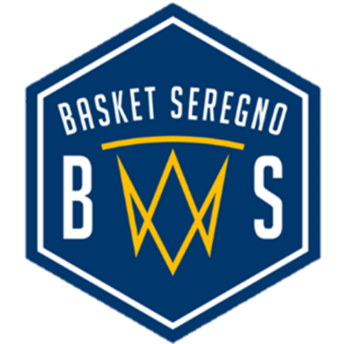
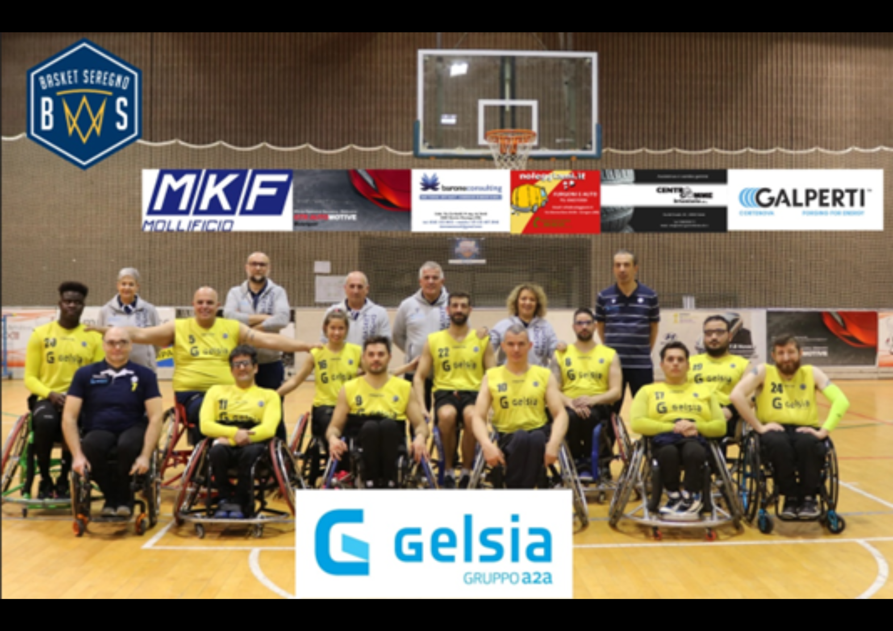
Notre équipe de Handibasket est née en 2008 d’un élargissement des sections déjà présentes dans le Basket Seregno ASD, club sportif regroupant plus de 250 athlètes.
Grâce aux efforts de Maurizio Bottoni, à l’époque président du club et aujourd'hui directeur en charge du secteur basket en fauteuil, et de Tony Pecoraro, athlète et entraîneur, l'équipe a obtenu une place en Série A2 en 2009/2010.
Néanmoins, par choix social, l'équipe a continué à jouer en Série B et le club a engagé ses ressources dans le développement du "capital humain" existant dans la région, en réalisant un projet de "croissance sociale" destiné à tous les garçons et filles handicapés, les aidant à sortir de leur "zone de confort" avec un sport d'équipe.
Nos athlètes pratiquent le basket en fauteuil depuis plusieurs années, mais ils ont également essayé ou pratiquent actuellement d'autres sports.
Pendant la saison sportive, notre équipe participe au championnat de Série B avec des compétitions dans tout le pays. Elle participe également à plusieurs tournois.
EQUIPE HANDIBASKET DU STADE ROCHELAIS – La Rochelle
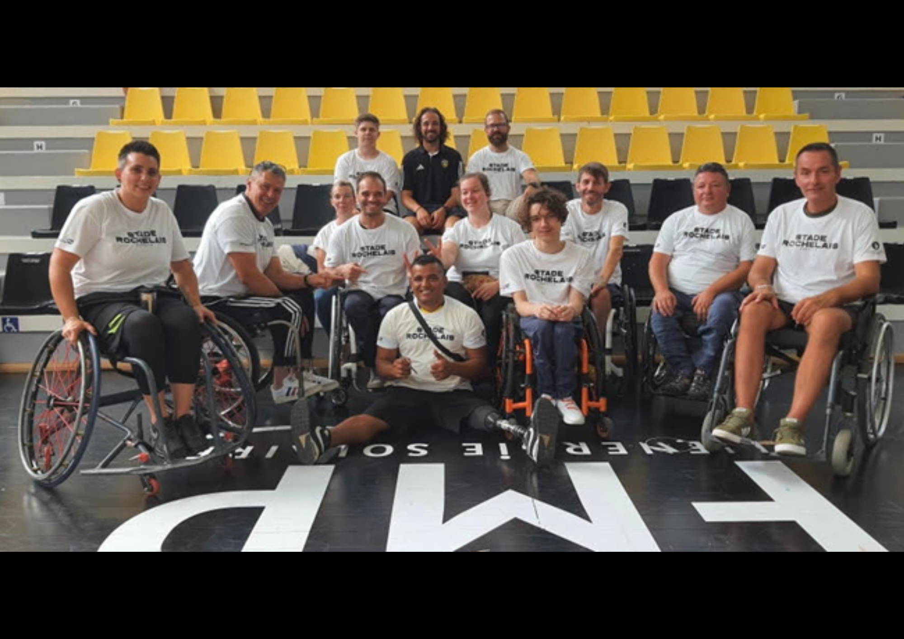
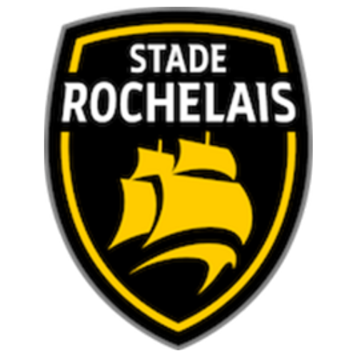
L’équipe du Stade Rochelais Handibasket s’est créée en mars 2022. C’est une équipe toute nouvelle en championnat mais elle fait partie du club du Stade Rochelais Basket qui existe depuis 1932.
A l’origine, le club se nommait Rupella (petite roche) et ses couleurs étaient blanches et bleues. Maintenant, nous connaissons principalement le Stade Rochelais pour son Rugby mais aussi pour son Basket Pro B et ses fameuses couleurs jaunes et noirs.
A l’origine de l’équipe handibasket, une idée de copains souhaitant se relancer en championnat pour se retrouver autour d’un ballon et s’amuser. Lors de sa première saison, l’équipe finit deuxième de sa poule, cette saison 2023/2024 elle finit quatrième.
L’équipe de handibasket du stade Rochelais évolue en Nationale 3 (N3) dans le championnat français.
Elle compte 12 licenciés compétition et 4 licenciés en loisir dont 2 joueurs de moins de 18 ans et 2 féminines. C’est une chance d’avoir une équipe jeune et dynamique.
Membres de l’équipe pour la saison 2023-2024 : (années d’ancienneté)
Mathis LOULIER (2 ans) ; Mathias TAVEAU (7 ans) ; Alexandre LOULIER (père de Mathis) ; Audrey DAIGRE (3 ans) ; Jean-Philippe ROUSSEAU (7 ans) ; Elodie PAPAIN (mère de Mathéo) ; Mathieu SEINE (9 ans) ; Teylon Pinheiro MACEDO (1 an) ; Marie Benedicte RAYNAUD (6 ans) ;
Mathéo PAPAIN (10 ans) ; Jean-Philippe RONDARD (1 an) ; Pascal TAVEAU ; Tanguy PLOMION (1 an)
Entraineur et Coach Adjoint : Mathias TAVEAU (7 ans) Coach : Pascal TAVEAU
Projet de l’équipe : Notre projet est de continuer à acquérir de l’expérience, à nous développer et à progresser dans notre apprentissage dans la culture du handibasket.
L’année prochaine, l’équipe aimerait finir de nouveau sur le podium de Nationale 3 et pourquoi pas espérer une montée en Nationale 2 !
EQUIPE HANDIBASKET DE TRENTO - Italie
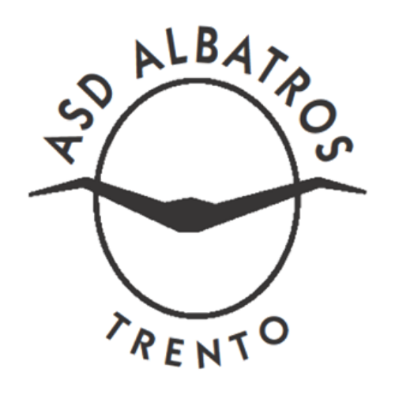
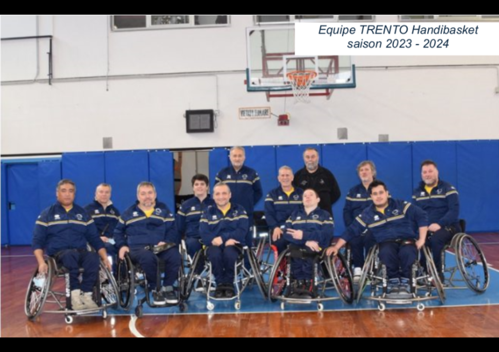
L'ASD ALBATROS TRENTO est une association sportive basée sur le volontariat, fondée en 1979, dans le but de promouvoir et de développer le sport en faveur des handicapés physiques dans la province de Trento et Bolzano (Italie).
L'entreprise compte environ 50 personnes dont des athlètes, des accompagnateurs et des collaborateurs.
Les disciplines envisagées dans le groupe sont actuellement le basket en fauteuil et le curling.
Les athlètes viennent des régions italiennes "Trentino - Alto Adige" et du "Veneto", mais aussi du Maroc, de Tunisie, du Bangladesh et de Serbie.
Lors de la saison 2023/24, l'équipe joue en Serie B, Groupe A du Championnat d'Italie.
Joueurs
9 – Marziani Paolo 61 ans points 4.0 président de la société
12 – Haque Rakib 23 ans 3,0 points
13 – Mimiola Michele 25 ans 2,5 points
14 – Spaneshi Fatos 47 ans 2,0 points
15 – Cagol Maurizio 69 ans 4,0 points capitaine de l'équipe
23 – Cescatti Michel 36 ans 1,5 point
88 – Madinelli Roberto 34 ans 1,5 points
99 – Vita Gian Pietro 70 ans 5 points entraîneur/joueur
Staff
Manzana Franco: mécanicien
Nicolodi Marco
Battaiola Lucia
Bertamini Cinzia
ACH Cappelle-la-Grande Basket Fauteuil
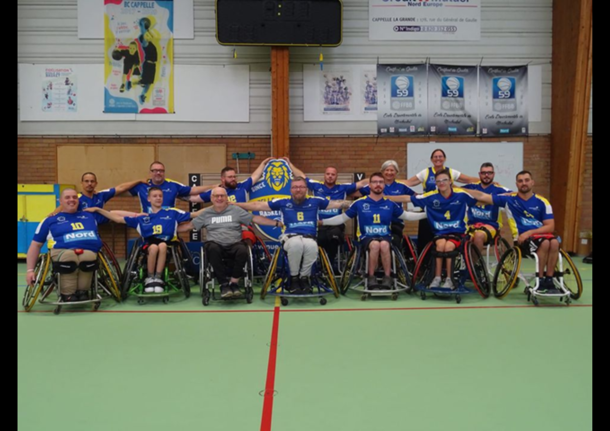
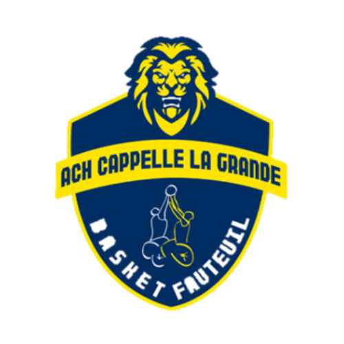
L’Association Chaleur Humaine Cappelle-la-Grande Basket a été créée en décembre 1989, auparavant connue sous le nom d’ACH Littoral Coudekerque-Branche. Elle est présente au sein du championnat de France handibasket depuis 1992. Cette saison, l’ACH dispute le championnat de France en Nationale 2.
L'association est une association sportive qui a pour but de promouvoir la pratique du basket Fauteuil.
En 2009, l’association est championne de France de nationale C et atteint son plus haut niveau en accédant à la nationale B.
Membres de l’équipe pour la saison 2023-2024 :
Théo Hemelryck (4) – Rachid Khalali (5) – Christian Jamotte (6) – Romain Delpierre (7) – Gaëtan Delpierre (8) – Fabienne Saint-Omer Delepine (9) – Geoffrey Geesen (11) – Romain Barra (13) – Thomas Delemme (14) – Maxime Delpierre (15) – Emerick Verlande (19)
Entraineur : Jean Paul Delpierre Présidente : Nathalie Lamorille
Responsable section Basket : Jean Paul Delpierre
Projet de l’équipe :
Pour la saison 2023-2024 l’équipe a pour objectif d’atteindre les phases finales de la
nationale 2. Chose faite en perdant au porte du Final Four contre l’équipe de Blanquefort. Pour la saison
prochaine, l’équipe va devoir recruter de nouveaux joueurs et de continuer à promouvoir le basket fauteuil
ainsi que le handicap au sein des établissements scolaires, des entreprises, ...
EQUIPE HANDIBASKET DE l’ETOILE DE CHARLEVILLE-MEZIERES
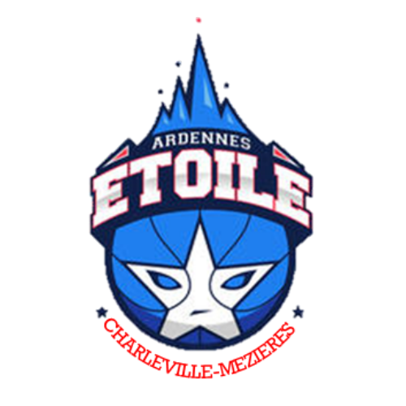
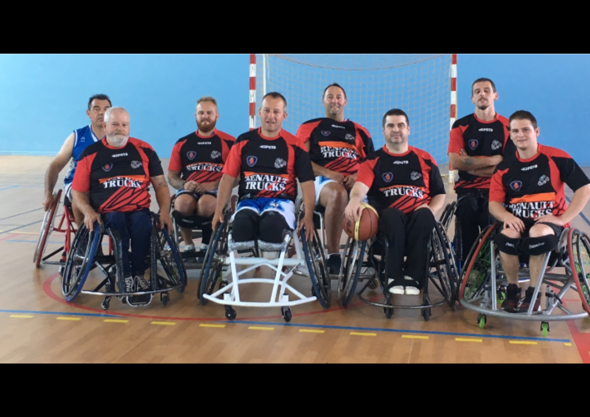
L’Etoile de Charleville-Mézières a ouvert sa section basket-fauteuil en 2017. Cette jeune équipe regroupe aussitôt des jeunes sportifs intéressés par la discipline ainsi que des ardennais chevronnés habitués à la compétition. Elle évolue en loisir jusque 2021, puis décide de tenter l’aventure en compétition en Nationale 3 pour la première fois lors de la saison 2021-2022. Une expérience difficile en raison d’un effectif réduit et des blessures, qui forcent l’équipe à créer une entente avec le club de Thionville lors de la saison suivante (2022-2023). Une entente qui ne durera qu’un an, l’effectif ardennais se voit une nouvelle fois réduit avec notamment le départ en retraite de l’expérimenté David MEUNIER (1pt), et l’envoi au pôle France du jeune et prometteur Jules KOLOSA (3.5pts). Les principaux atouts ardennais évoluent désormais en Nationale 2 avec le club d’AULNOYE-AYMERIES, avec la légende du basket-fauteuil Pascal « papy »CLADEL (3pts), le couteau-suisse Christophe SOMMÉ (3,5pts) et l’impactant Ludovic BAIJOT (4pts). De son côté, le redoutable Vincent BERTRAND (4pts) enchaîne les ficelles du côté de Thionville. Le jeune Johan HAMEN (4,5pts) tentera de faire bonne figure malgré une pratique en loisir cette saison, épaulé par deux solides renforts nordistes, Dylan MAIRESSE (1pt) et Sébastien ROUSIES (1pt). Il s’agit sans nul doute de l’équipe du tournoi qui a le moins de temps de jeu ensemble à son actif. Néanmoins une chose est sûre, ces ardennais vendront chèrement leur peau sur le terrain et se défendront avec hargne et courage ! Projet de l’équipe : Prendre du plaisir sur le parquet, recruter et rebâtir un groupe solide et motivé par un objectif commun : la reprise de la compétition à moyen terme.
Règlement et déroulement du tournoi
Règlement officiel avec adaptations suivantes
Arbitres officiels
Nb de points maxi sur le terrain : 15,5
Durée des matches : 2 périodes x 15 min sans arrêt chrono
4 ième faute d’équipe donne droit à un seul lancer sur nouvelle faute
3 fautes personnelles par joueur
1 temps-mort de 1 min par période
Concert
Pour l'occasion, le groupe Appetite (Tribute Guns N'Roses) viendra jouer le samedi 18 mai.
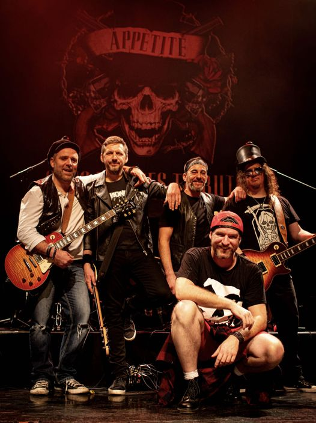